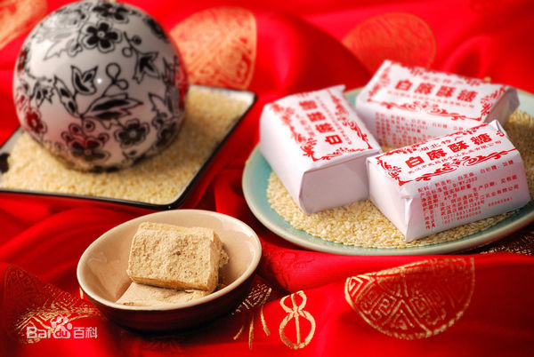
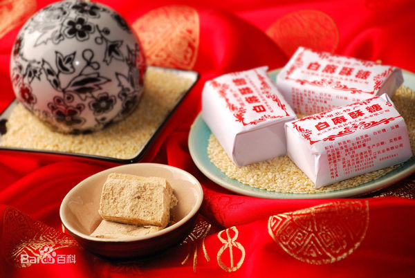

w一些好恰的w
👇👇👇👇👇👇👇👇
滁菊
滁菊是菊目，菊科的植物。滁菊主要产于滁州，是菊花中花瓣最为紧密的一种。滁菊偏肝阳，常用于治疗肝阳上亢所致的头晕目眩等症，高血压中医辨证属肝阳上亢者可将滁菊、决明子代茶饮。《本草纲目拾遗》记载菊花可作枕明目、头痛眩晕、目赤肿痛等属肝阳上亢者可使用滁菊做成的药枕
酥糖

滁州名产琅琊酥糖，原名“面糖”、“董糖”，起源于明朝末年。它是用纯白芝麻、白糖粉、富强粉、麦芽糖等为原料。生产出的糖块厚薄均匀，骨薄如纸，剖面层次清晰，呈螺旋体，色泽为乳白色；入口酥软，细腻无杂质，香味 琅琊酥糖浓郁，甜而不腻，文人墨客赞之日：“香召云外客，味引洞中仙”，营养丰富，老少咸宜。

👆👆👆👆👆👆👆👆
滁菊
滁菊是菊目，菊科的植物。滁菊主要产于滁州，是菊花中花瓣最为紧密的一种。滁菊偏肝阳，常用于治疗肝阳上亢所致的头晕目眩等症，高血压中医辨证属肝阳上亢者可将滁菊、决明子代茶饮。《本草纲目拾遗》记载菊花可作枕明目、头痛眩晕、目赤肿痛等属肝阳上亢者可使用滁菊做成的药枕
酥糖

滁州名产琅琊酥糖，原名“面糖”、“董糖”，起源于明朝末年。它是用纯白芝麻、白糖粉、富强粉、麦芽糖等为原料。生产出的糖块厚薄均匀，骨薄如纸，剖面层次清晰，呈螺旋体，色泽为乳白色；入口酥软，细腻无杂质，香味 琅琊酥糖浓郁，甜而不腻，文人墨客赞之日：“香召云外客，味引洞中仙”，营养丰富，老少咸宜。